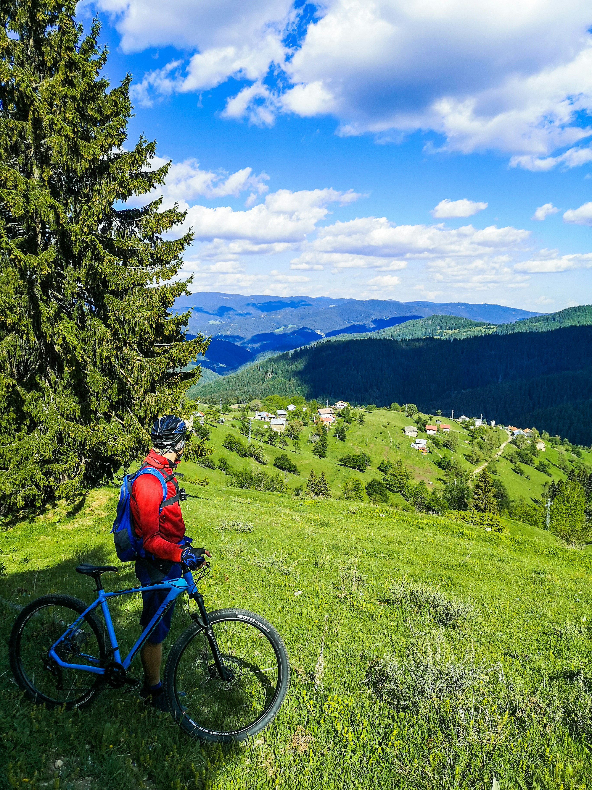
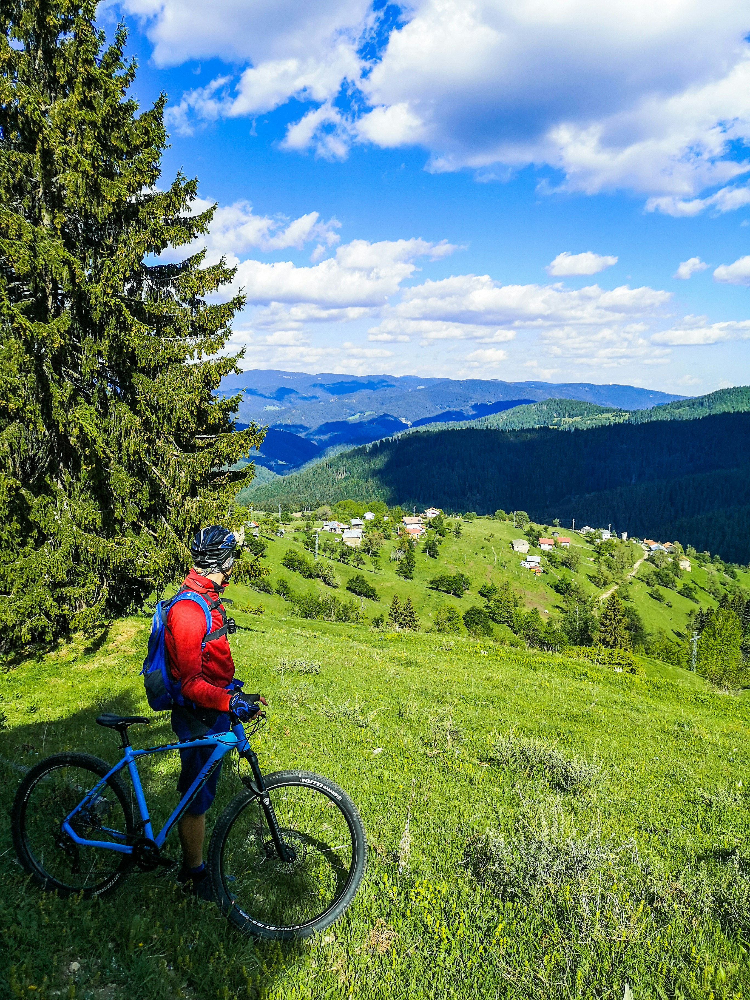

Bicicleta Estándar (COP $10,000 por hora)
Nuestra Bicicleta Estándar es perfecta para aquellos que buscan un paseo tranquilo por el camping. Esta bicicleta de montaña cuenta con cambios de velocidad y un cómodo asiento.
Bicicleta de Montaña (COP $15,000 por hora)
La Bicicleta de Montaña es ideal para aquellos que buscan una aventura fuera de los caminos trillados. Esta bicicleta cuenta con suspensión completa y frenos de disco para un manejo seguro en terrenos difíciles.
Bicicleta Eléctrica (COP $20,000 por hora)
Para aquellos que buscan un paseo más relajado, ofrecemos la Bicicleta Eléctrica. Esta bicicleta cuenta con un motor eléctrico que ayuda a los ciclistas a subir colinas y recorrer largas distancias con facilidad.